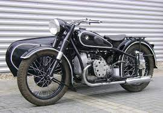
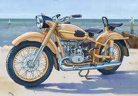

Советские мотоциклы и Альфа


«Ура́л» — советский и российский тяжёлый мотоцикл, выпускаемый на Ирбитском мотоциклетном заводе (Свердловская область, г. Ирбит). В подавляющем большинстве случаев эксплуатируется с коляской. Выпускаются модели мотоцикла как с приводом на колесо коляски, так и без него. Привод колеса коляски — отключаемый, бездифференциальный. «Урал» является дальнейшим развитием мотоцикла М-72, копии немецкого BMW R71.
На сегодняшний день выпускаются следующие модели:
с коляской: Урал-T, Турист, Патруль 2WD, Gear-UP, Ретро[1]
одиночки (без коляски): Ретро Соло и Соло sT[1]
Данные мотоциклы оснащены четырёхтактным оппозитным двухцилиндровым двигателем объёмом 745 см³ мощностью 40 л.с., 4-х ступенчатой КПП с задним ходом и карданным приводом заднего колеса.